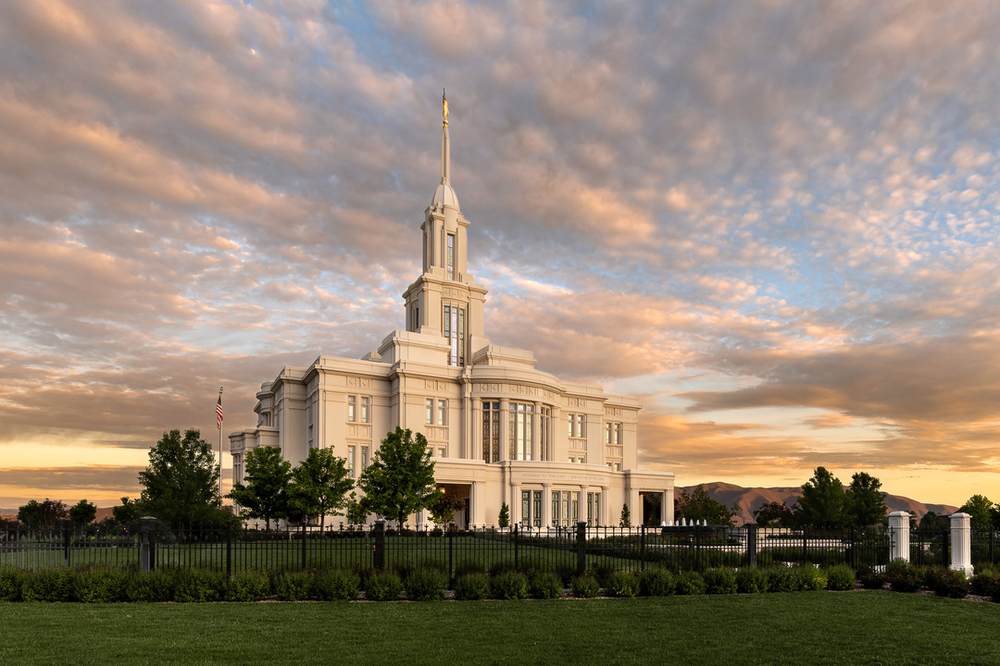
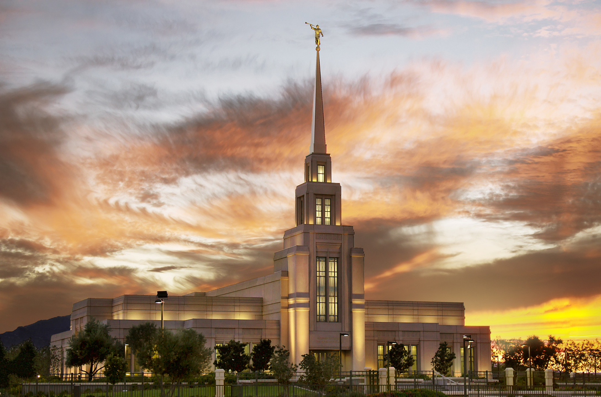
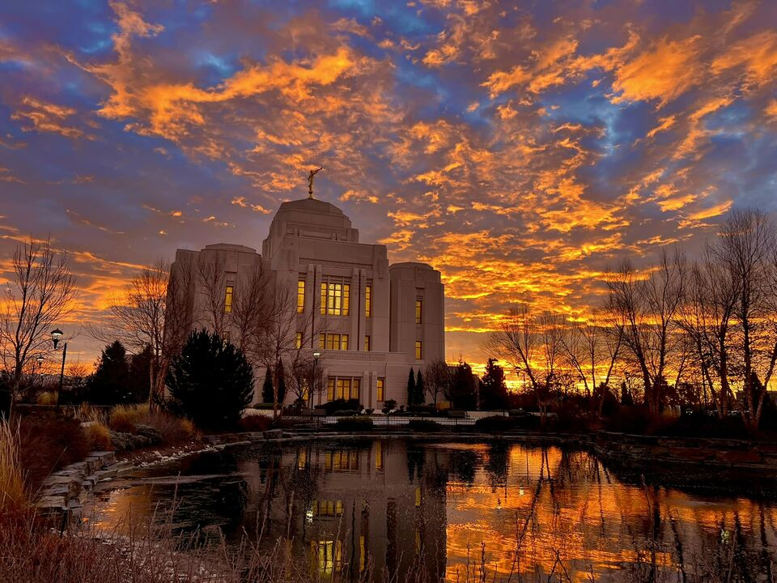
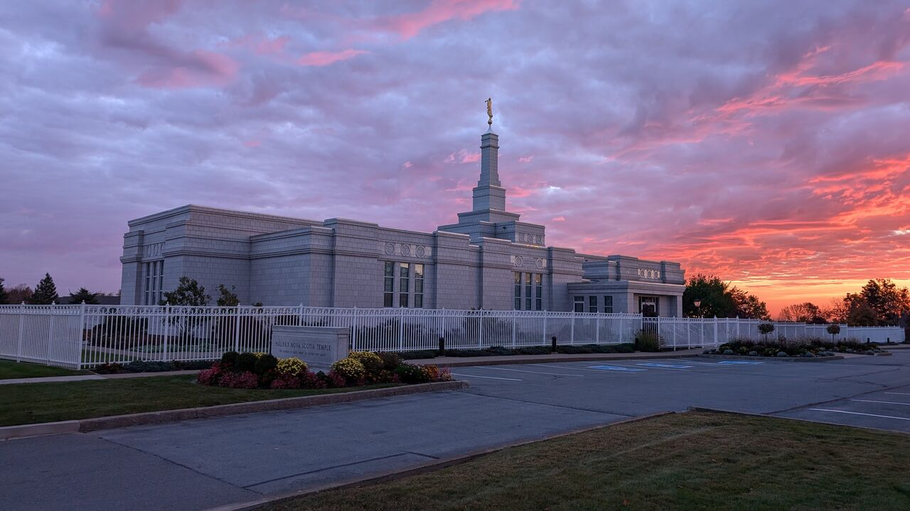

Aba Temple
Location: Aba, Nigeria
Dedication: 2005, August, 7
Size: 11500 sq ft

Payson Utah Temple
Location: Payson, utah, United States
Dedicated: 2015, June, 7
Size: 96630 sq ft
Manti Utah Temple
Location: Manti, Utah, united States
Dedicated: 1888, May, 21
Size: 74792 sq ft

Yigo Guam
Location: Yigo Guam
Dedicated: 2020, May, 2
Size: 6861 sq ft

Washington D.C Temple
Location: Kensington, Maryland, United States
Dedicated: 1974, november 19
Size: 156558 sq ft

Gilla Valley Temple Arizona
Location: Central Arizona
Dedicated: 23 May 2010
Size: 18,561 sq ft
Meridian Idaho-Temple
Location: Meridian, Idaho United States
Dedicated: 19 November 2017
Size: 67,331 sq ft
Tokyo-Japan-Temple
Location: Minato-ku, Tokyo
Dedicated: 27-29 October 1980
Size: 53,997 sq ft

Halifax Nova Scotia Temple
Location: Nova Scotia, Canada
Dedicated: 14 November 1999
Size: 10,700 sq ft
